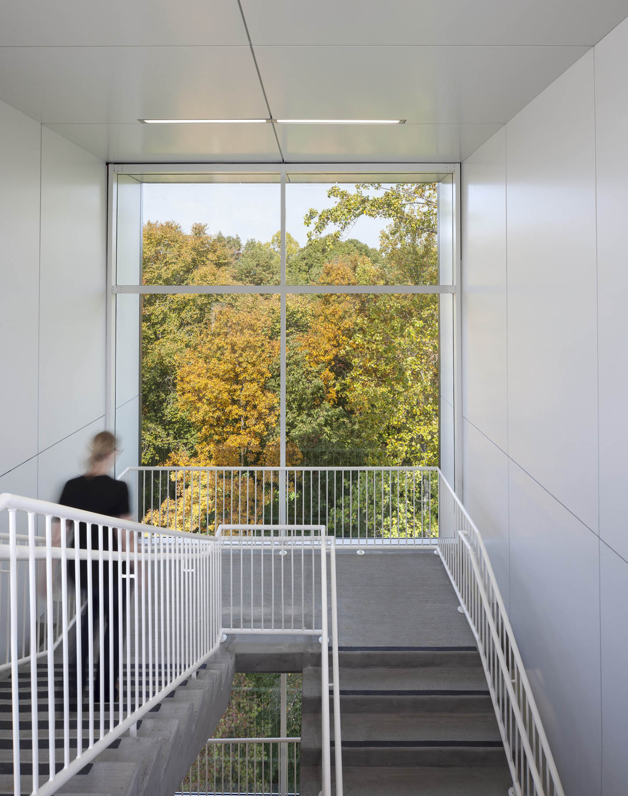
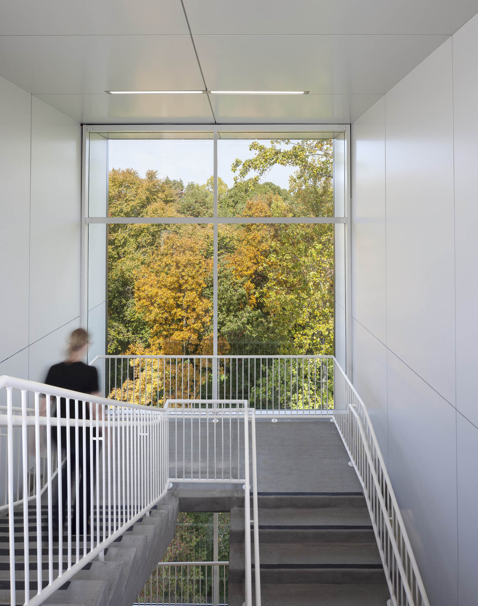

Work
Ryan Johnson AIA

Wake Tech : Parking Deck 2
2008-2009
850 space Parking Deck
Architect | Facade Detailing, Grasshopper Scripting, Revit Aricheture Lead
Bridge across wetlands, side engaging nature vs the raod
Photos © Mark Herboth Photography LLC. Used with permission.

 


NC State : James B Hunt Jr Library
2009-2012
230,000 sqft Engineering Library
Intern Architect
This library was orginally conceived to put NC State University on the nation stage. and it was a success as it has won over 20 design awards and featured in multiple magazines. The building is such a success that the library has full time staff that are devoted to giving tours of the building. My firm worked with the lead design archtiect Snohetta. My role included heavy involvement from SD on. I was the BIM Coordinator and responsible for making sure that the Revit model was working properly, as well as doing a large part of the documentation alongside the team.
Photos © Mark Herboth Photography LLC. Used with permission.


Duke University: Edens Quad Dorm Renovation
2014-2015
154,000 sqft Dorm Renovation
Architect
Duke university wanted to increase the desireablilty of the Edens Quad dorms. They also wanted the dorms to feel more open, invbiting and connected to the rest of the campus. The big idea was to gather up all the small shared commons spaces that were spread thruoghout the dorms and collect them into one place. The final idea included a gaming room and study commons set at the newly designed entrance to the quad. It also included the renovationof each dorms commons rooms by removeing the Brutalist concrete pabels and replacing them with glass.
Photos © Jordan Gray. Used with permission.
City of Raleigh: Critical Public Safety Center
2014-2015
Architect. Facade Detailing, adn Coordination.
This project is the location for emergency services for the City of Raleigh. It is in operation 24-7 and also is the location where the city is operated in times of need. Unique elements are that the building is in compliance with DOD blast and bulletproof requirements. Our firm was responsible for the design of the Exterior Skin, and the initial layout concepts of the building. I was responsivle for the first time our firm has tried to use a more thermally broken brink lintle detail that involved pulling the lintle off the facade, so that the insulation could be continuous behind the steel.


State of North Carolina: Green Square Parking Deck
2010-2011
782 space Parking Deck
Intern Architect
This parking deck is located in an urban setting and is part of the Green square complex, which is a series of Museums, research labs, and offices for the state of raleigh. This project ffeatrue many sustainable elements, including a Cistern feeatured priminately on the corner, LED lightin, and the entire roof is covered with PV panels.
Photos © Mark Herboth Photography LLC. Used with permission.

Tech Studio
Technology and how it can impact Design is one of my main areas of interest. Out of this I created and lead the Tech Studio inside Clark Nexsen, which is a multi-disciplinary firm of nearly 400 people. I am responsible for fostering and sharing ideas surrouynding technology in our firm. THe group consists of arounf 30 people in various disciplines with various roles in the firm. I regurlary create prersentation for the monthly meetigs, as well as prersentation to the Shareholders, adn teh Board of Directors.